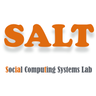

Bio
Hi, I'm Xinyue Chen. I am currently a second-year doctoral student at Computer Science and Engineering, University of Michigan, Ann Arbor, supervised by Prof. Xu Wang. Previously, I received my B.S. in the Department of Information Management from Peking University , advised by Prof. Pengyi Zhang
Research interests
I conduct research in the intersection of Human-Computer Interaction, Learning Science and Collaboration. I designed and developed human-AI collaborative tools to support communication, discussion, and collaboration in both work and educational settings. My research aims to help people have a more equal and engaged group discussion and collaboration experience by designing novel interaction techniques to scaffold and reshape group dynamics. I explored novel interaction and communication mechanism to help underrepresented students to engage in conversation more flexibly. I design human-AI collaborative tools to help people restructure the discussion and make marginalized voices be seen by others.
I'm actively seeking for HCI research internship!
Updates
-
\
- [April 2023] Our paper "MeetScript: Transcript-based Interactions Give People Additional Participation Channels in Group Video Meetings"is conditionally accepted in CSCW'23!
- [Sep 2022] Our paper "My Culture, My People, My Hometown: Chinese Ethnic Minorities Seeking Cultural Sustainability by Video Blogging" is conditionally accepted in CSCW'23!
- [July 2022] We'll present our paper "Scaling Mixed-Methods Formative Assessments(MixFA) in classrooms through a clustering pipeline" in AIED'22!
- [May 2022] We'll present our Late-breaking-work on understanding surgical attending-redisent intraoperative coordination in CHI'22!
- [April 2022] Our paper on scaling Mixed-Methods Formative Assessments(MixFA) in classrooms through a clustering pipeline got accepted to AIED'22! More details to come soon!
- [March 2021] Excided to decide to join UMich CSE this fall to pursue my PhD in HCI, advised by Prof. Xu Wang.
- [October 2020 ] Our paper on understanding the use of live video streaming for online education received an Honorable Mention Award at CSCW 2020.
Peer-Reviewed Conference Paper
Journal Paper
MeetScript: Transcript-based Interactions Give People Additional Participation Channels in Group Video Meetings
Xinyue Chen, Shuo Li, Shipeng Liu, Robin Fowler, Xu Wang
CSCW2023 (to appear)
“My Culture, My People, My Hometown”: Chinese Ethnic Minorities Seeking Cultural Sustainability by Video Blogging
Si Chen *, Xinyue Chen *, Zhicong Lu, Yun Huang
CSCW2023 (to appear)
Late-Breaking Work/ Posters/ Workshops
Projects
Understanding the Motivation and Challenges of "Study With Me" Online
Xinyue Chen, Ke Li, Pengyi Zhang
Experience
-
LifeLongLearning Lab, University of Michigan, Ann Arbor
Research Assistant, June 2020 - Now
Mentor: Xu Wang
Topic: Designing online meeting and learning tools which support better mutual understanding.
-

SALT Lab, University of University of Illinois at Urbana-Champaign
Research Intern, Feb 2020 - April 2021
Mentor: Yun Huang
Topic: Understanding the new trend and practice in video community in China.
-
Department of Information Management, Peking University
Undergraduate Student, Sep 2017 - July 2021
Supervior: Pengyi Zhang
Received Bachelor's Degree (with Honors) at PKU.